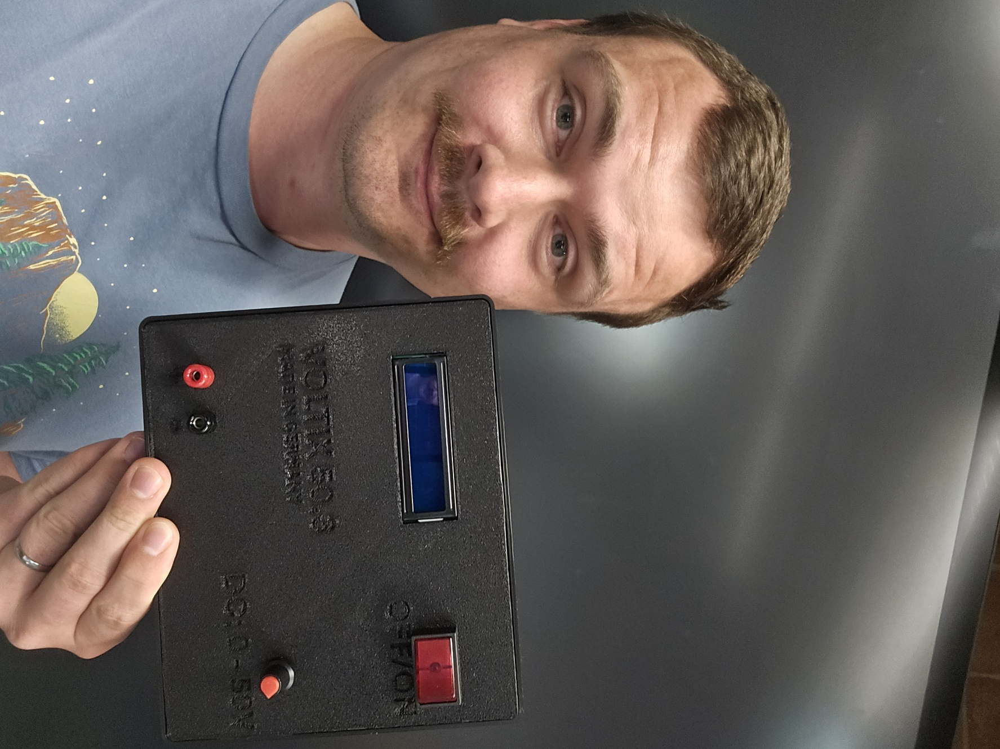

Schön, dass du dich interessierst und dir ein funktionierendes LCD bestellen möchtest.
Für heute hat deine Schule die Hardware gekauft.
Also weiter mit der Fehlersuche :)

Für heute hat deine Schule die Hardware gekauft.
Also weiter mit der Fehlersuche :)